沙田の萬佛寺。
タイガーバームガーデン亡き後、香港最強の珍寺候補としてその最右翼に挙げられるであろうこの寺は映画「インファナルアフェア」のロケ地としても有名だ（そうです）。
今回、萬佛寺に「あるお方」がいらっしゃる、という読者様のタレコミ情報を得て数年ぶりの再訪と相成った。
ある方とは…まあ、歩を進めようじゃないか。
九廣鉄道の沙田駅を降りると山の中腹に観音サマのレリーフが見える。
萬佛寺のニューカマーのようだ。
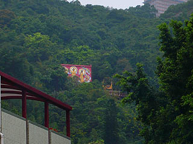
早速寺に向かうとしよう。
最初に訪れた時に一番ショッキングだった金ぴかのプラ羅漢がずらりと並ぶ羅漢道。
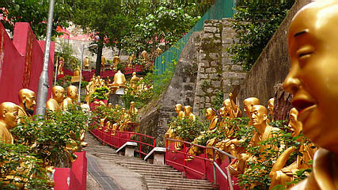
しかも以前と比べて台座や背後の壁が赤く塗られたことでマッド具合が1５０パーセントアップされる結果に。
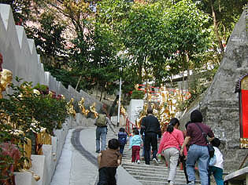
（2002年訪問時の羅漢道。当時相当のインパクトを誇ったが、今よりはおとなしい）
そんな赤と金が連続する目がチカチカする参道を登っていく。
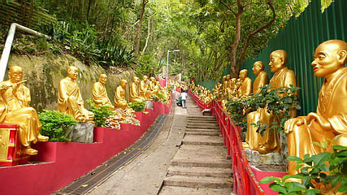
羅漢サマといえば勿論、数々の修行を積んだ方々ゆえ人を笑かす技術も超Ａ級である。
ほら、ミーちゃん、ご挨拶は？ …グェ…
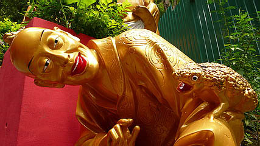
気味の悪い生き物に乗っている方々。
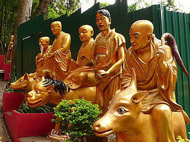 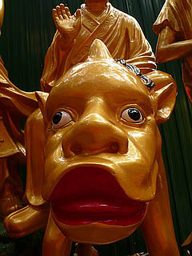
桃が美味しそうなあまり唇が二重になっちゃっている人。
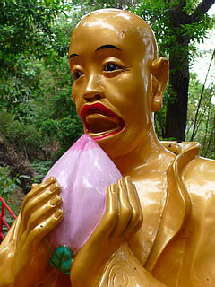
説明不要にいい感じの人達。ちなみに麦藁帽子もFRPで出来てます。
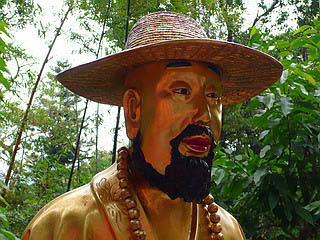 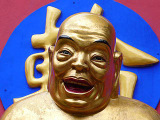
そんな羅漢道を歩いていくと本堂のあるエリアに着く。
しかし参道はさらに山頂に向かって延びている。
以前来た時には水害の影響で閉鎖されいたと思われるエリアだ。
先程までの金ぴか羅漢の行列は終わり、今度は道教の神様、六十甲子像の行列。
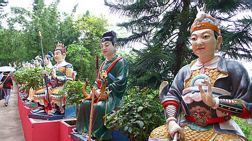
そして六十甲子といえば…
でっ、出た〜〜〜〜
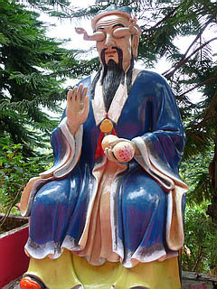
甲子太歳金辨大将軍のお出ましである。
目から手が〜、手から目が〜。
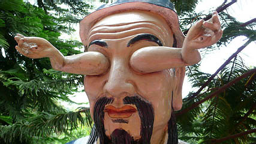
相変わらずこの世のものとは思えぬ御姿である。
二の腕が微妙にムッチリしているあたりに妙なリアリティがあってそれはそれで気持ちが悪いもんです。
もう、ここまでキモいんだからいっそのこと電動で手が動いたら面白いのに…
以前台湾で見た甲子太歳金辨大将軍は子供顔だったが、どうやらこちらの髭スタイルが一般的なようで。
そんな六十甲子像を見ていくと他にも笑える神様方がいらっしゃる。
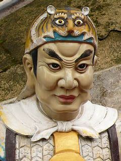
役者、北大路欣也。
今度のお父さんは虎。
只今役作り中です。
瞬きはしません。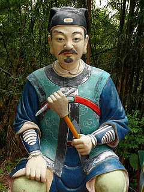 犯人は私じゃありません。
この手が悪いんです…
六十甲子像の先には再び金ぴか像が密集してそうだ。
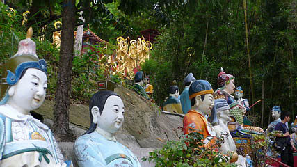
おお、今度は観音サマの行列か。
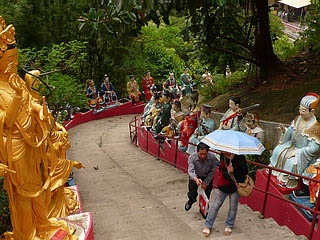
金ぴかのプラ観音が並ぶ辺りがこの寺で一番高い場所である。
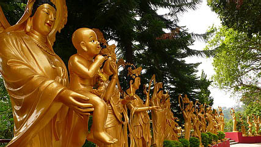
プラ観音とはいえ日本のものと比べるとこってり濃厚な味わいがある。
十一面観音の後頭部。意外とキッチリ作り込んでますね。
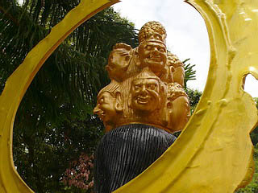
準提殿。
観音サマと関羽の取り合わせが奇妙な印象を受けるが香港の人にとっては違和感ないのだろうか。
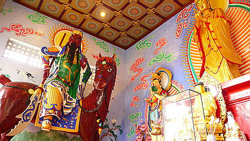 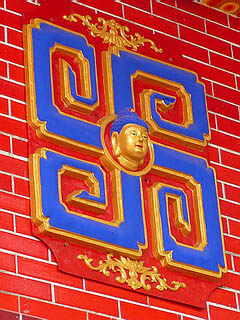
先程駅前から見えたレリーフ。中央に阿弥陀サマ、両脇を観音サマが固めている。
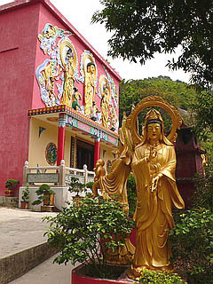
中には巨大な阿弥陀像が立っている。
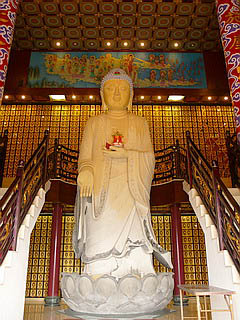
両脇に階段があり、阿弥陀サマを間近に見る事ができ、その巨大さを堪能できる。
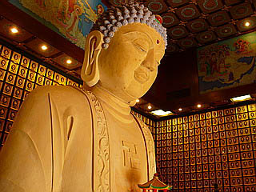 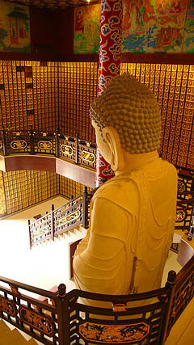
壁には一面の佛レリーフ。
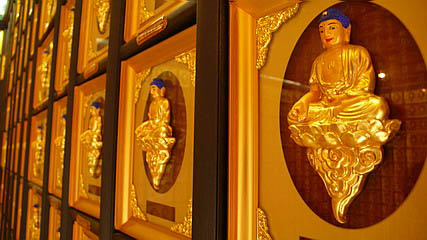
一方こちらは龍華閣。いわゆる納骨堂だ。
取って付けたような屋上の列柱が妙に安っぽい。ある意味この寺を象徴しているかのような建物だ。
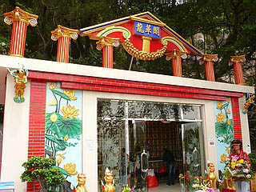
その龍華閣の前にあった鎮墓獣。
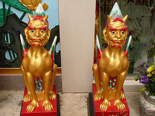
鎮墓獣（ちんぼじゅうと読むのだよ）は中国の墓守の象徴で古くは陶器のモチーフなどにもなっている。
身体は獣、顔はおっさんという想像上の奇獣だ。もちろんここのはFRP。
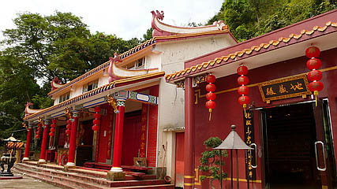
その他、お地蔵さんがいらっしゃる地蔵殿、玉皇殿などが軒を連ねる。
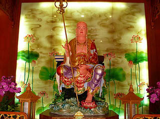 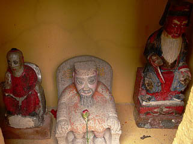
玉皇殿はかつての水害の影響で未だに閉鎖されたままだ。
軒先には小さな祠があり、道教神が祀られていた。
てなわけでまたしても六十甲子像街道を下りて本堂のあるエリアに向かうことにしよう。
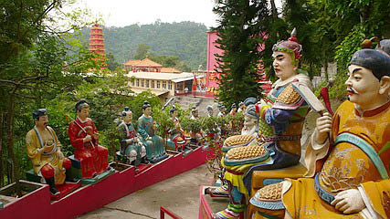
萬佛寺2へＧＯＧＯ！
珍寺大道場 HOME